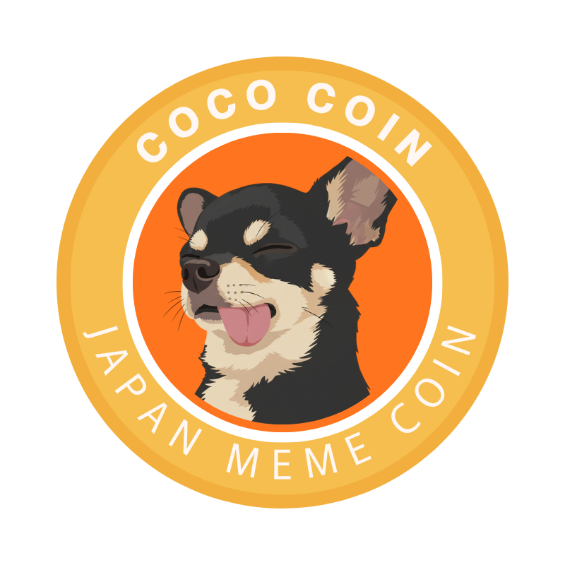
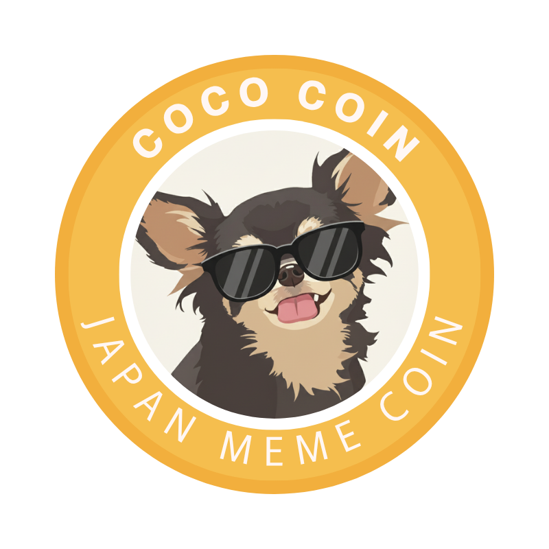
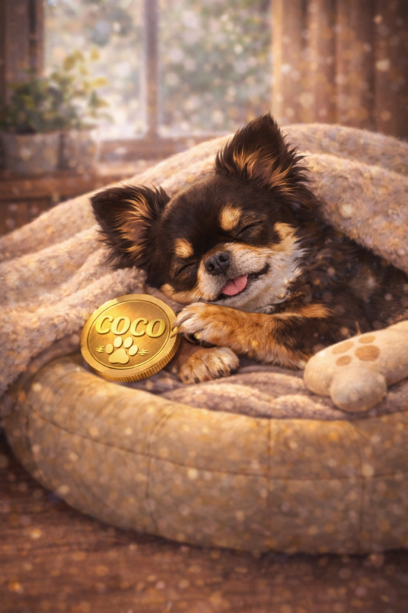
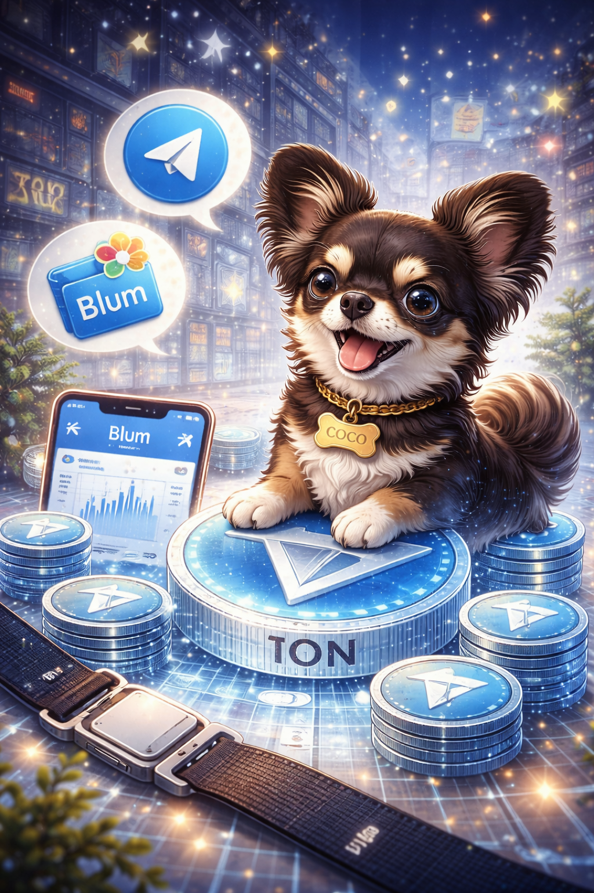
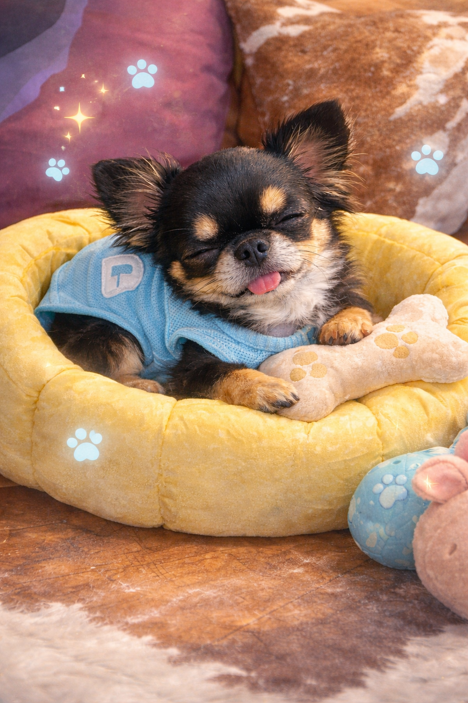
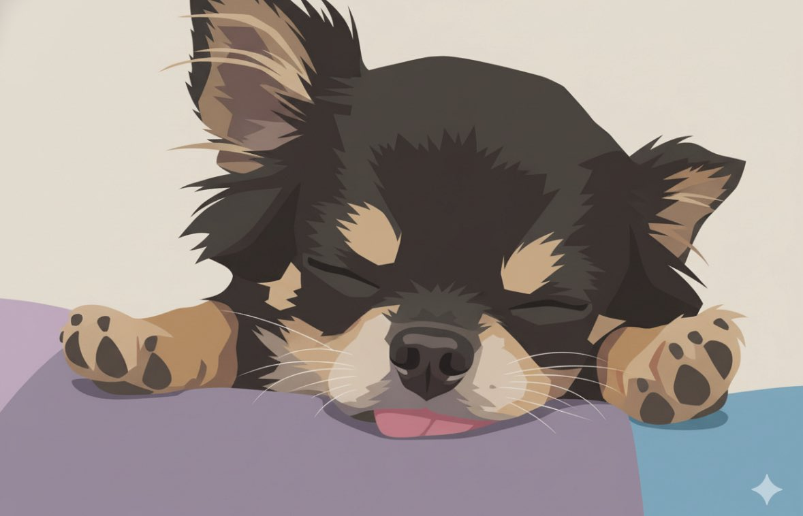

愛されるキャラクターLoved Character
COCOちゃんを中心に、国や言語を超えて親しめるミームへ。
A meme built around COCO, a character people can love across languages and borders.

COCO COINJASEAN Meme on TON
COCOは、日本のやさしさとASEANの熱量をのせて、TONの世界へ広がる新しいミームコミュニティです。
COCO is a new meme community on TON, carrying Japanese warmth and ASEAN energy to the world.
桜、夏の灯り、紅葉、雪景色。日本の四季のように、ゆっくり愛されながら育っていくミームブランドへ。
Like Japan's four seasons, COCO is growing slowly, warmly, and together with its community.
What is COCO?
日本生まれの黒チワワ、COCO。いつも舌を出して、ちょっと人間みたいないびきをかく、愛されキャラクターです。
COCO is a beloved black Chihuahua from Japan, known for always having his tongue out and snoring like a human.
かわいいだけで終わらず、信頼、文化、クリエイティブ、コミュニティをつなぐミームブランドを目指します。
Beyond cuteness, COCO aims to connect trust, culture, creativity, and community as a global meme brand.
COCO is more than a meme.
A small character with a big community dream.The Concept
日本の「丁寧さ・信頼・ガチホ精神」と、ASEANの「スピード・拡散力・クリエイティブ」。そこにTONのTelegramネイティブな広がりを重ねることで、COCOの世界観が生まれます。
COCO blends Japanese care, trust, and long-term spirit with ASEAN speed, creativity, and reach, amplified by TON's Telegram-native ecosystem.
COCOちゃんを中心に、国や言語を超えて親しめるミームへ。
A meme built around COCO, a character people can love across languages and borders.
日本、ASEAN、世界のユーザーが参加できる多言語コミュニティへ。
A multilingual community open to Japan, ASEAN, and the world.
誰もがCOCOを描き、作り、広げられるオープンなブランドへ。
An open brand where anyone can draw, create, remix, and share COCO.
Telegram、TON Wallet、Blumをやさしく案内する入口へ。
A friendly gateway to Telegram, TON Wallet, Blum, and TON-native culture.

Community First
COCOは、短期的な盛り上がりだけを目指すミームではありません。応援してくれる人、広げてくれる人、作ってくれる人と一緒に育てていくプロジェクトです。
COCO is not just chasing short-term hype. It is a project to grow together with supporters, creators, and the community.
運営保有分は、売るためではなく、貢献者・クリエイター・コミュニティ拡大のために活用されます。
Team-held tokens are intended for contributors, creators, and community growth, not team selling.
COCO Moments
COCOの発信は、チャートや難しい言葉の前に、まず「見た人が少し癒されること」から始まります。
Before charts or complicated words, COCO begins with a simple feeling: giving people a small moment of healing.



How to Join
トレードにはTelegramアプリのインストールが必要です。暗号資産には価格変動リスクがあります。無理のない範囲で参加してください。
Trading requires the Telegram app. Crypto assets involve price volatility. Please participate within your own comfort zone.

Vision
でも、小さなキャラクターが、世界中のコミュニティに愛される存在になるかもしれない。COCOはJASEANから世界へ、TONを代表する国際ミームブランドを目指します。
A tiny character can become something loved by communities around the world. From JASEAN to the world, COCO aims to become a global meme brand on TON.
COCO is more than a meme.